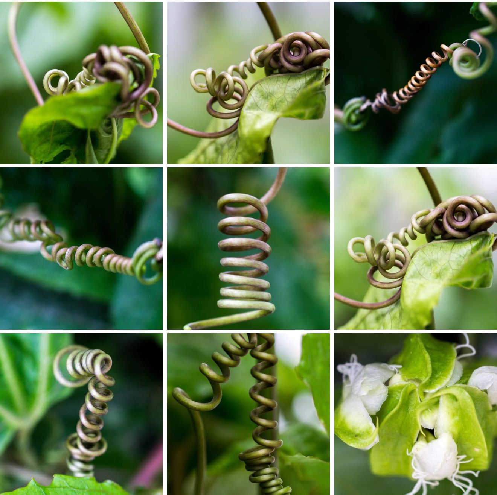
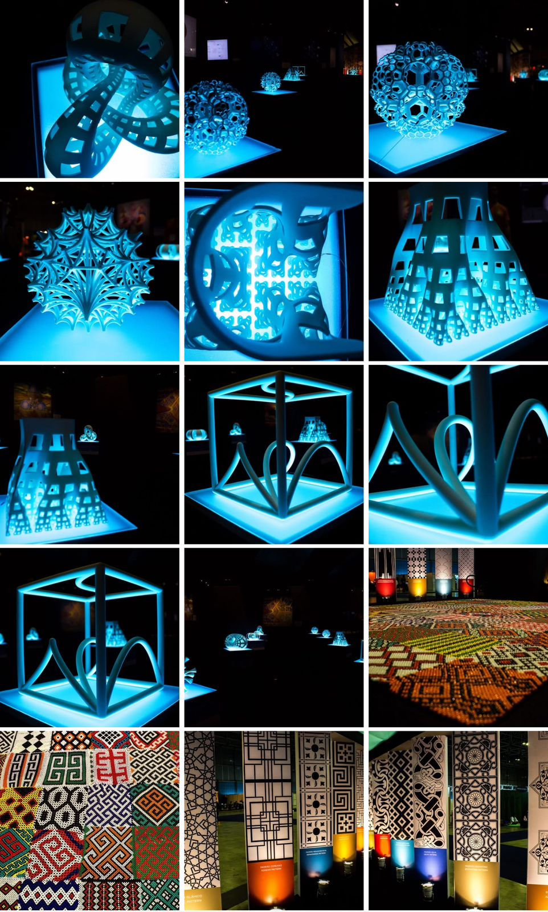

O olhar matemático revela padrões onde o olhar comum vê apenas formas. Nas composições a seguir, a professora Cristina Lizana nos convida a perceber a geometria silenciosa que organiza o mundo: desde a espiral que rege o crescimento de uma planta até a simetria rigorosa das esculturas e mosaicos. A natureza e a arte, aqui, falam a mesma linguagem.

